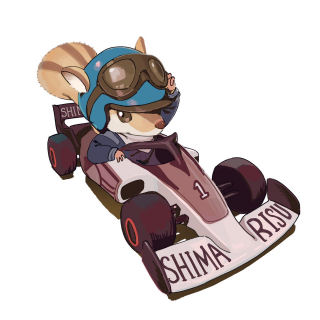

3D Rotary Engine(VRML)
Japanese Page
It's just Virtual Reality where you can change the angle freely, where it differs from normal moving images and so on.
Introduction of VRML Viewers
On Windows 10/11 recommend
Cortona 3D Viewer for Windows
and Cortona Mini Viewer.
On iOS or iPadOS use
Cortona 3D Viewer
app.
On android use
Model Viewer on Android
app.
Linux & Mac use
Castle Model Viewer
.
VRML is Virtual Reality Modeling Language.

© 2026, Shimarisu